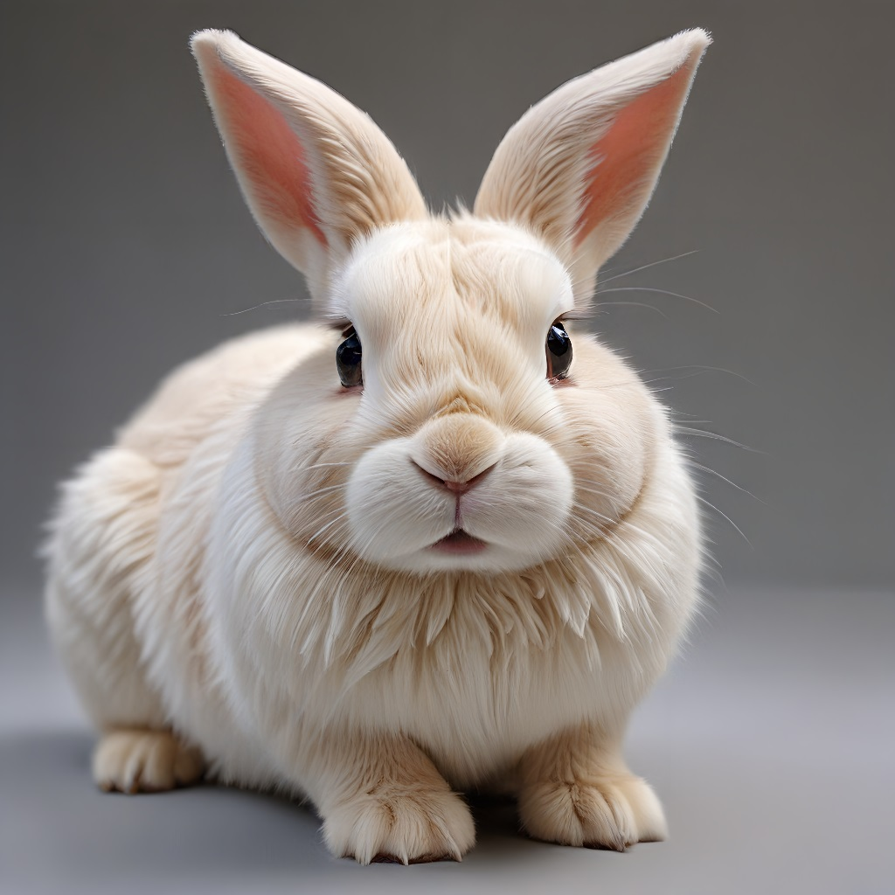

"එය 4 ගුණයක් විශාල කරන්න, Ultra Sharp ආකෘතිය භාවිතා කරන්න"
ප්රතිඵලය:

AiCasso හි සුපර් රිසොලියුෂන් විශේෂාංගය ඔබේ රූප තවත් හොඳින් පෙනෙන්නට උපකාරී වේ. ඔබට ඔබේ රූපය කෙසේ දියුණු කිරීමට අවශ්යද කියා පවසන්න, AiCasso ඉතිරි කටයුතු කරනු ඇත. විශේෂාංගය හෝ සම්පූර්ණ රූපය වැඩි දියුණු කිරීම සඳහා, භාවිතා කිරීමට ඉතා පහසුය.
"එය 4 ගුණයක් විශාල කරන්න, Ultra Sharp ආකෘතිය භාවිතා කරන්න"
ප්රතිඵලය:ඔබේ රූපය කෙසේ දියුණු කරන්නේ යන්න පිළිබඳ තවත් පාලනයක් එක් කිරීමට අවශ්ය නම්, ඔබට ක්රීඩා කළ හැකි අමතර විකල්ප කිහිපයක් මෙන්න:
මෙම විකල්ප සම්පූර්ණයෙන්ම විකල්පීය බව මතක තබා ගන්න! ඔබට අවශ්ය නම් එය සමඟ කටයුතු කිරීමට අවශ්ය නැත. ඔබට අවශ්ය දේ විස්තර කරන්න, AiCasso එය සිදු කිරීමට හොඳම ක්රමය සොයා ගනී. සහ ඔබේ වචන වලින් සම්පූර්ණ වීම ගැන කණගාටු නොවන්න—AiCasso ඔබට තේරුම් ගනී!